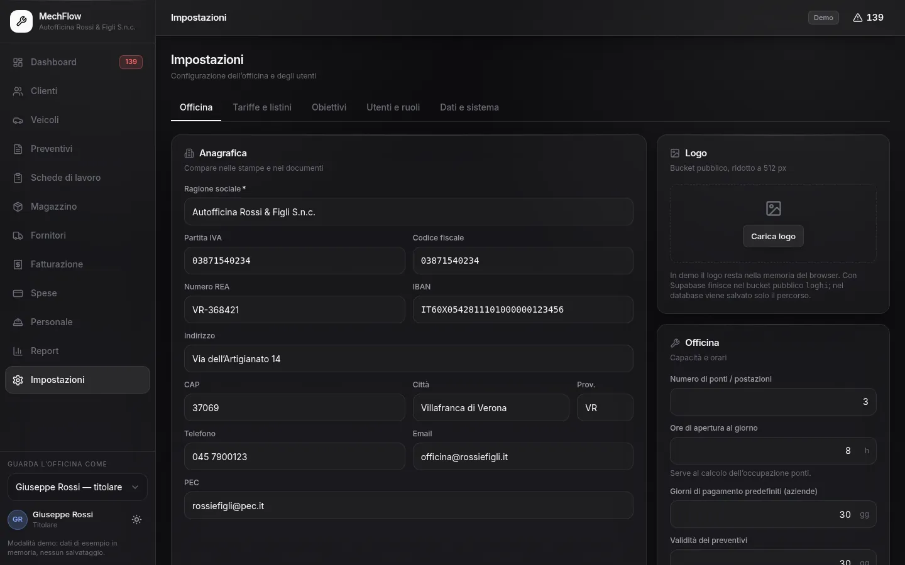

Titolare
Tutto.
- Fatturato, marginalità, costi e report
- Spese, impostazioni, tariffe e obiettivi
- Utenti, inviti e ruoli
MechFlow · Sicurezza
Quello che compare nel menu è cortesia verso l’utente. Il controllo vero sono le policy di PostgreSQL, che valgono anche per una chiamata REST fatta a mano con il token in mano: nascondere una voce di menu non ha mai fermato nessuno.
Tutto.
Tutto il lavoro, niente conti.
Le sue schede, le sue ore.
Il capofficina deve poter emettere una fattura — la crea chiudendo una scheda — ma non deve vedere il fatturato complessivo. Le due cose sono in tensione: un documento che non puoi rileggere non è utilizzabile.
La soluzione adottata: inserimento libero, lettura limitata agli ultimi sette giorni. Quanto basta per lavorare, non abbastanza per ricostruire il fatturato di un periodo. Il modulo Fatturazione resta comunque fuori dal suo menu.

Il titolare invita, sceglie il ruolo e spedisce il codice. Chi lo riscatta entra nell’officina con quel ruolo e con nient’altro.
Ogni riga di ogni tabella porta l’identificativo dell’officina, e un controllo verifica che nessun riferimento — il cliente di un veicolo, l’articolo di un movimento — punti fuori.
Dove finiscono i dati
Tutto in memoria: nessuna chiamata di rete, allegati e logo come data URL. Niente lascia la macchina.
Un progetto PostgreSQL che scegli tu, anche in Europa. Non c’è un servizio intermedio a cui i dati passino.
Foto dei danni, loghi e documenti stanno in un archivio privato: si leggono con URL firmati a scadenza, non pubblici.
Nessun CDN, nessun font remoto, nessun tracciamento. La policy dei contenuti ammette una sola origine esterna: il tuo progetto Supabase.
Aprire la demo e guardare la stessa officina con gli occhi di ciascun ruolo.